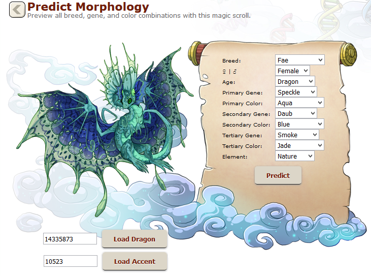
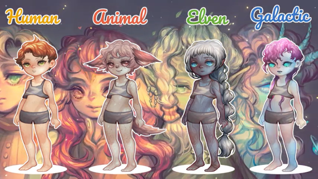
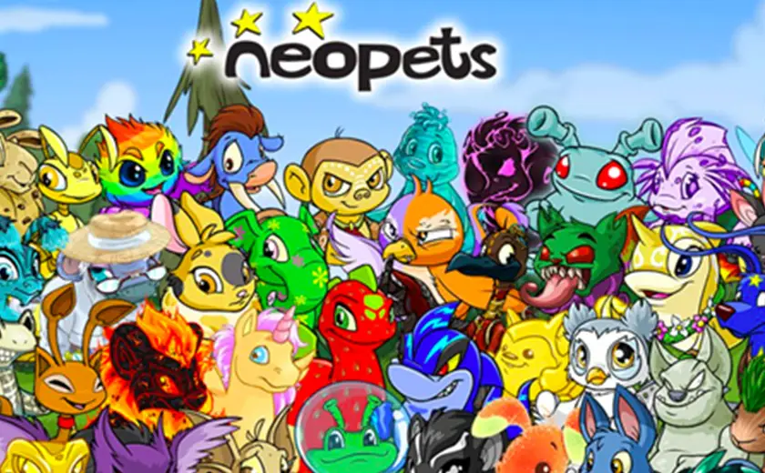
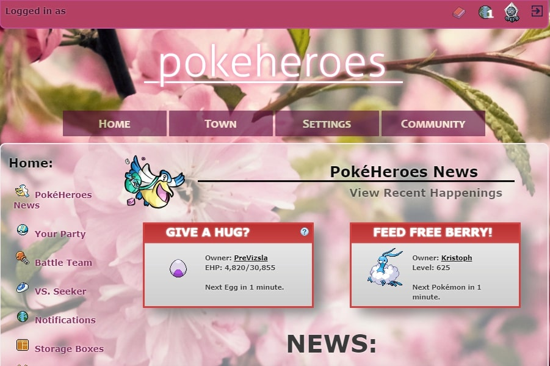

Virtual pet sites
Virtual pets have been popular ever since the 90s, so it's no surprise that there are several virtual pet browser games that survived over the years as well as a couple of newer ones.
Here are some the best:
Flight Rising
Active since: 2013
Flight Rising is a social web-based activity site featuring dragon breeding, adventuring (a planned feature not yet implemented), combat, and collecting. It puts you in control of your own clan of dragons, allowing you to breed them in varying colors and patterns, specialize their abilities and stats, and adorn them thousands of different ways with a variety of apparel and skins.
Dappervolk
Active since: 2020
Dappervolk is a cute online pet and avatar game with a painterly style and RPG elements. Dropped into the game as a "worldhopper" with no memory of who you are - but with curious pet animation powers - you will embark upon a quest to discover the truth regarding your origins and those of the magical world around you. You can collect tons of unique items to customize your character with, collect adorable pets, go adventuring and solve hundreds of riddles, play minigames, do quests and more! Game is also meant to be highly social, with quests requiring social interactions and with there being no easy way of getting certain items without trading.
Neopets
Active since: 1999
First launched in 1999, Neopets was once the biggest digital pet game in existence. Players could buy, win, trade, collect, and customize a wide variety of colorful cartoon animals. Mini-games, events, forums, and an ever-shifting economy kept gameplay interesting for years. It's since become a major point of nostalgia for many a millennial, with former players fondly remembering their long-lost pets and the site's charming, quintessentially Y2K aesthetic.
PokéHeroes
Active since: 2013
PokéHeroes is a fanmade Pokémon online game where you explore the legendary mysteries and secrets of Emera Town. You adopt Pokémon eggs, hatch them and raise them to strong and powerful monsters. Fill your PokéDex, collect rare items, hunt for Shiny Pokémon with the PokéRadar or spend some time in the Global Trade Station, the Safari Zone, at the Emera Beach or at many other cool places all around the town. Dozens of different activities are waiting for dedicated Pokémon trainers and those just wanting to enjoy an extensive virtual pet site alike.